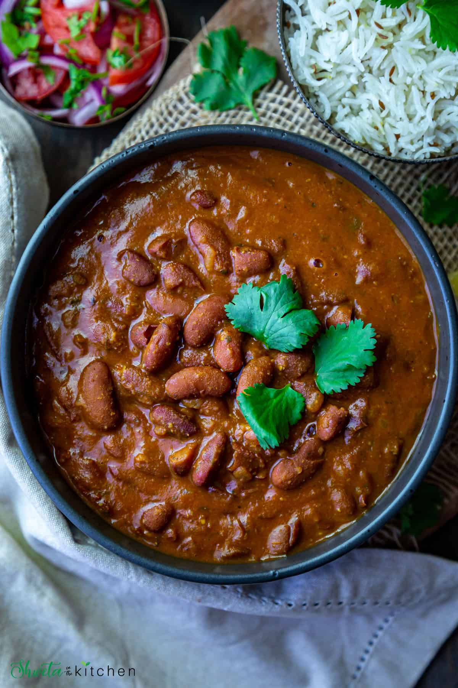
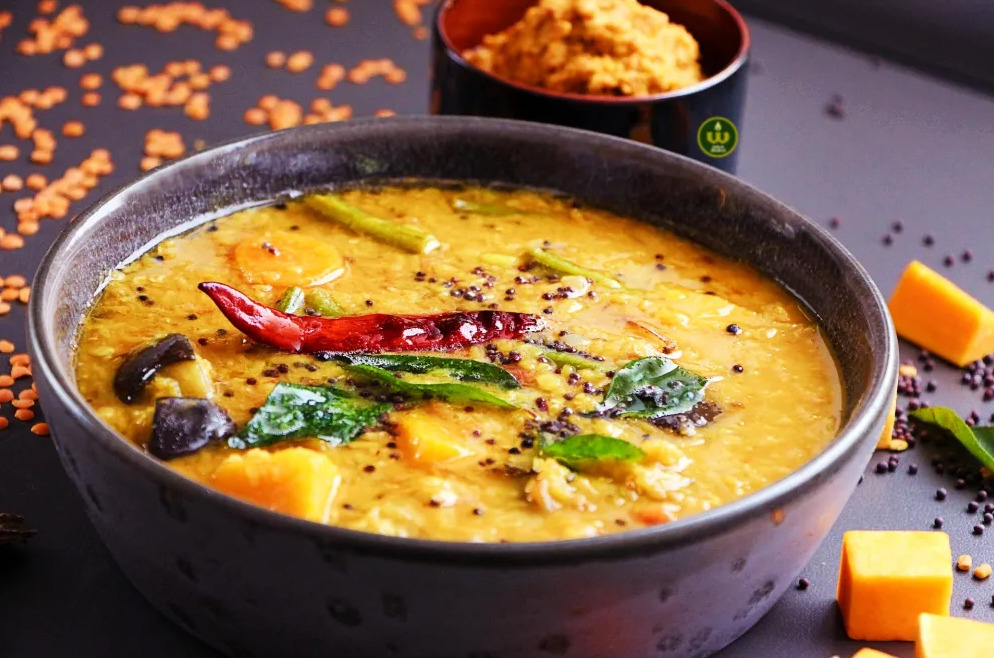
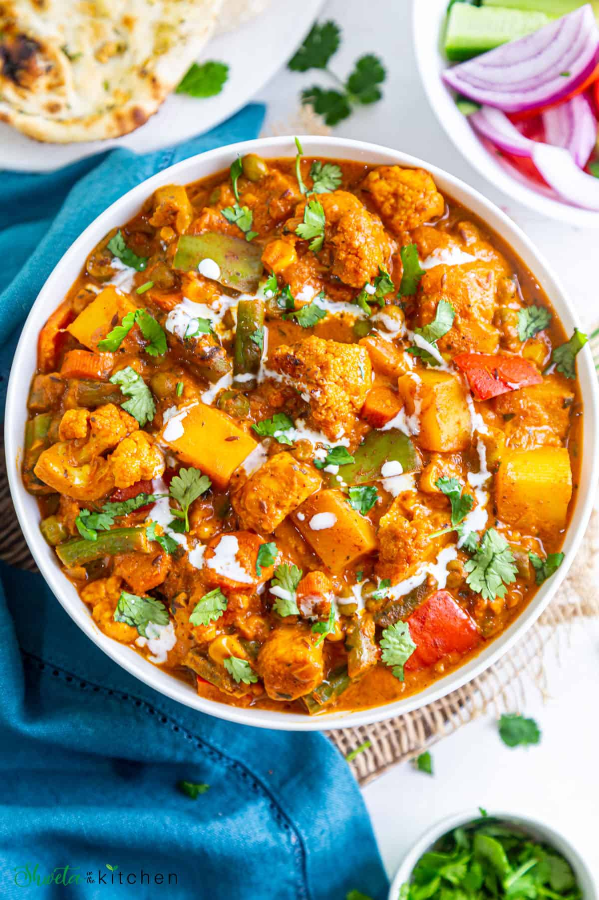
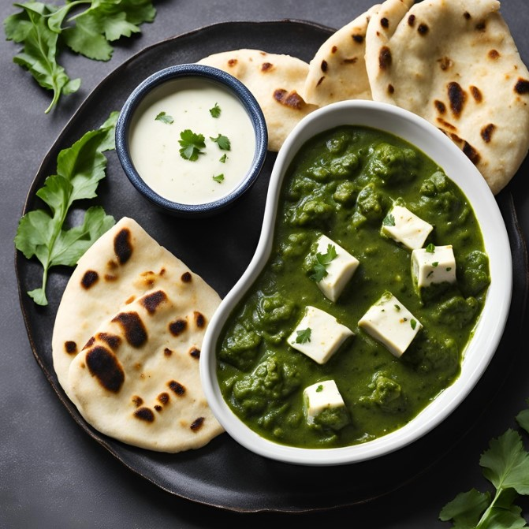
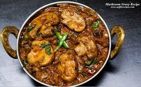
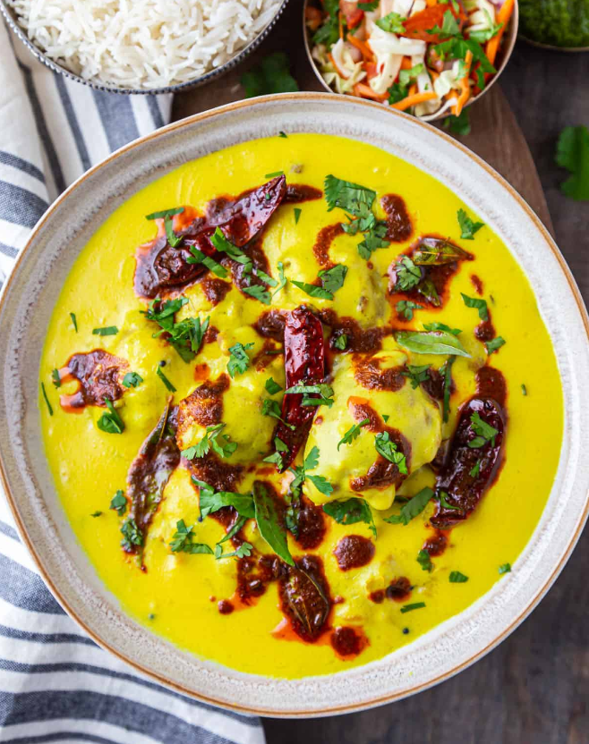
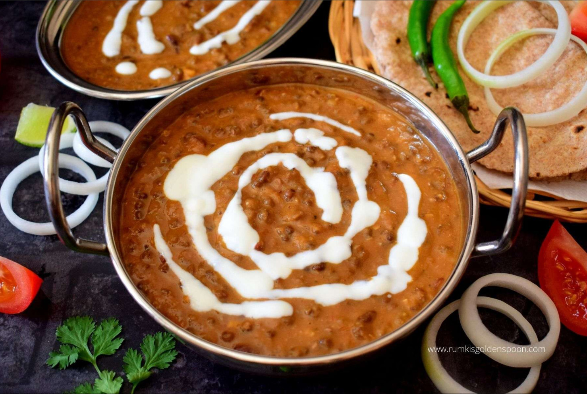
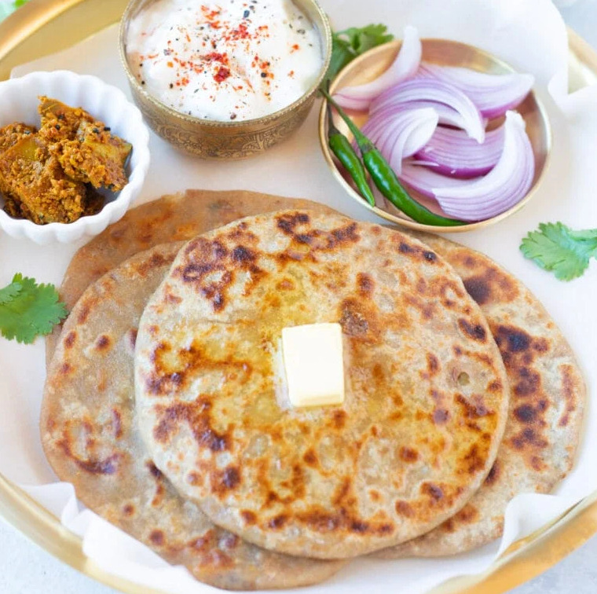

Rajma
Rajma is a rich, flavorful kidney bean dish
View Recipe

Sambhar
Sambhar is a spicy, tangy South Indian lentil stew.
View Recipe

Mix Veg Curry
Mix veg curry is a flavorful, spiced vegetable dish.
View Recipe

Palak Paneer
Palak paneer is a creamy spinach curry with paneer.
View Recipe

Mushroom Masala
Mushroom masala is a flavorful, spiced curry with mushrooms.
View Recipe

Kadi Pakora
Kadi Pakora is a spiced yogurt curry with fried dumplings.
View Recipe

Dal Makhni
Dal Makhni is a creamy, rich lentil dish with spices.
View Recipe

Aloo Paratha
Aloo Paratha is a stuffed flatbread filled with spiced potatoes.
View Recipe